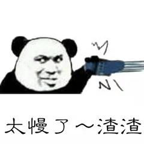

最近有学妹问我，我训了一个Transformer模型，但是预测好慢啊，有啥解决方案吗？
我心想，你又想好，又想快，咋不上天🚀呢？
于是我跟她说，你可以试试lightseq啊，跟闪电⚡️一样快，用了你就可以上天了。
她一脸懵比，lightseq是啥玩意儿啊？咋就能让我的模型起飞🛫️了呢？
我跟她说，你不需要知道太多细节，你只需要知道它是一个Transformer系列模型推理加速库就行了。
她还是一脸疑惑，那用起来能有huggingface方便吗？你看人家就两行代码。
我不屑一笑，就这？lightseq也只要两行代码就够了！
为了方便，我用了一个bart模型预测句子中mask单词的例子来给她吹了一波。
不懂什么是bart？建议先去看看huggingface的文档：
https://huggingface.co/transformers/model_doc/bart.html
huggingface bart
我们平时想用huggingface的bart来预测句子中的mask单词，大体上都会像下面这样写代码：
from transformers import BartTokenizer, BartForConditionalGeneration
tokenizer = BartTokenizer.from_pretrained("facebook/bart-base")
model = BartForConditionalGeneration.from_pretrained("facebook/bart-base")
sentences = ["I love that girl, but <mask> does not <mask> me."]
inputs = tokenizer(sentences, return_tensors="pt", padding=True)
generated_ids = model.generate(inputs["input_ids"], max_length=50)
res = tokenizer.batch_decode(generated_ids, skip_special_tokens=True)
print(res)当然运行前要先安装一下transformers包：
pip3 install transformers最后会输出句子“I love that girl, but she does not love me.”，句子中的两个“mask”被预测成了“she”和“love”。
看起来预测的很nice，但是预测的也太慢了，这要是有一堆句子要去预测，不得等到🐒年🐎月？

接下来我们来看看lightseq是怎么加速预测的。
lightseq bart
代码我都放在下面地址了，只要两分钟就能跑出结果了：
https://github.com/bytedance/lightseq/tree/master/examples/inference/python
运行前要先安装一下lightseq包：
pip3 install lightseq首先lightseq只能接收HDF5或者PB格式的模型文件，我们帮你写好了模型转换的脚本，就是hf_bart_export.py，它会将huggingface预训练的bart模型转换为HDF5格式。
所以直接运行python3 hf_bart_export.py就行了，这里我们用的是bart-base模型。
运行完了会发现执行目录下多出一个lightseq_bart_base.hdf5文件，这就是转换后的模型文件。
最后直接跟huggingface一样，两行代码就能搞定啦：
import lightseq.inference as lsi
from transformers import BartTokenizer
tokenizer = BartTokenizer.from_pretrained("facebook/bart-base")
model = lsi.Transformer("lightseq_bart_base.hdf5", 128)
sentences = ["I love that girl, but <mask> does not <mask> me."]
inputs = tokenizer(sentences, return_tensors="pt", padding=True)
generated_ids = model.infer(inputs["input_ids"])
generated_ids = [ids[0] for ids in generated_ids[0]]
res = tokenizer.batch_decode(generated_ids, skip_special_tokens=True)
print(res)看得出来仅仅替换了模型定义和模型推理那两行代码而已，是不是非常简单快速？
这时候她又问了，那我换一个模型，比如bert，要怎么导出pb模型呢？
也很简单，只需要为bert也单独写一个hf_bert_export.py就行了。不过目前还在开发中，之后会慢慢完善常见的一些模型的。
速度到底怎么样？
我写好了一个例子，就在ls_bart.py里，直接运行就行了，当然你也可以加上--user_input参数来手动输入句子。
输入的句子是：
I love that girl, but does not me.
She is so that I can not help glance at .
Nothing's gonna my love for you.
Drop everything now. Meet me in the pouring . Kiss me on the sidewalk. 运行结果如下：
=========lightseq=========
lightseq generating...
lightseq time: 0.03332779789343476s
lightseq results:
I love that girl, but she does not love me.
She is so beautiful that I can not help glance at her.
Nothing's gonna change my love for you.
Drop everything now. Meet me in the pouring rain. Kiss me on the sidewalk.
=========huggingface=========
huggingface generating...
huggingface time: 0.3208070669788867s
huggingface results:
I love that girl, but she does not love me.
She is so beautiful that I can not help glance at her.
Nothing's gonna change my love for you.
Drop everything now. Meet me in the pouring rain. Kiss me on the sidewalk.可以看出预测的是真的🐂🍺，最后两句歌词都预测的很完美，能看出是啥歌吗？
再看预测时间，lightseq是huggingface的10倍左右，真是一个天上一个地下啊。
总结
总结一下，想要使用lightseq加速你的模型，只需要两步就行了：
- 将你的模型转换为hdf5格式的模型。（lightseq为你写好了转换脚本，不断更新中）
- 调用
lightseq.inference.Transformer和model.infer进行快速推理。
学妹赶紧打住了我，好了好了，我知道很🐂🍺了。还给你装起来了，我这就去用。
但是源码哪里有？我想学一学。
我又甩给她一串地址：
https://github.com/bytedance/lightseq
好好看，好好学，都是CUDA写的，要是看得迷糊，建议先去看看我之前的入门教程嗷：
https://godweiyang.com/2021/03/28/nn-cuda-example/
从此，世上又多了一位快如⚡️的👨。